contents | previous | next ROSALIE was soon ready to proceed on an expedition, from which she found no pretence would excuse her. She mounted her sister Catharine's with reluctance; her father, mother, and Miss Lessington, were in the post chaise; the other sister was also on horseback; and it did not add much to Rosalie's prospect for the day, that this was her sister Maria who had been put out of humour the preceding evening by the unfortunate and undesired preference Hughson had shown Rosalie; and who, now sullen and pouting, endeavoured to show her sister that she had not forgotten the mortification. They had ascended and were riding along the hill, but the morning being hot and sultry, Rosalie turned her horse towards
) View image of 66 View image of 66its edge, where began a wood that shaded one side of it, and the ash and beech afforded a temporary skreen; several roads wound up the hill from the villages below, and as Rosalie was crossing one of these she saw Montalbert suddenly appear, who, approaching her with the common salutation of the morning, rode along by her side without noticing the rest of the party. Rosalie, conscious that this would give great offense to her father and mother, and unwilling to increase the dislike they seemed already to have taken to him from the little attention he showed to them the preceding evening, inquired if he would not speak to them? "Bye and bye, (said he coldly); but, good God, is it never possible to have a moment's conversation with you?—I have a great respect for Mr. and Mrs. Lessington, because they are so nearly related to you, but you know that I have not the pleasure of being acquainted with them."
) View image of 67 View image of 67There was something of peculiar dejection in the manner of Montalbert as he spoke. "You are not well?" said Rosalie. "Not very well, (replied he); but the hot weather of England never agrees with me. There is something strangely oppressive in it. I don't know whether it is that which has affected poor Charles; but, I assure you, he is seriously ill—so ill, that we do not think of going to-morrow. The Count, being obliged to be in London, left us this morning, as it was uncertain when Charles would be well enough." "I am very sorry, (said Rosalie with quickness), it will so distress my dear Mrs. Vyvian!—Has he sent for any advice?" "It were well worth while to be ill, (said Montalbert), were one sure of exciting interest so tender."—"But you do not answer me, (said Rosalie, affecting not to hear him). Has Mr. Vyvian sent for Mr. Harrison, the apothecary?"
) View image of 68 View image of 68"I believe Mr. Hayward intended it, (replied Montalbert), for the poor old man was frightened out of his wits. Charles, however, opposed it. Perhaps it will be nothing. But you know that his mother has nursed him to death; and that Hayward is as timid as an old woman about him." "I am very uneasy, (said Rosalie, pausing a moment). I think I had better tell my mother; she would surely see Mr. Vyvian, as she knows how very wretched her friend would be should her son be ill at a distance from her." Thus saying, and without waiting for an answer, she rode towards the chaise and bade the driver stop. Montalbert did not go with her, but followed the chaise at some distance. "Well?—(said Mrs. Lessington sharply, as the chaise stopped)—and what now?" "Dear Madam, (answered Rosalie in visible consternation), here is Mr. Montalbert, whom I have met by accident, who tells me that Mr. Charles Vyvian is taken very ill?"
) View image of 69 View image of 69"Well?—(cried Mrs. Lessington impatiently)—and what would you have us do?" "I thought, Madam, (said Rosalie, deeply blushing and speaking quick), I thought you might be alarmed on account of your friend Mrs. Vyvian, and might—might——" "I don't see what we can do, my dear, (said Mr. Lessington). Probably Mr. Hayward has taken proper care of the young gentleman.—I suppose, (added he, addressing himself to Rosalie), since Mr. Montalbert came hither by accident, that Mr. Charles has not sent any message expressing a wish to see your mother?" "No, Sir," answered Rosalie. "Well then, child, there is no call for our interference: I wish him better with all my heart. Rose, you keep up with the chaise—Andrew, drive on, we shall be late." Andrew obeyed, and Montalbert, who had very slowly rode on while this conversation lasted, stopped, as the chaise passed,
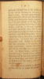 View image of 70and made a formal bow to the persons in it, but without showing any intention to speak to them. He then rejoined Rosalie, and continued to ride the pace she did forty or fifty yards behind the chaise, complaining of the perverseness of his fate, in her being to stay perhaps several days at Chichester; while she, in her turn, expressed very great uneasiness about Mr. Vyvian, and seemed to attend very little to the unequivocal expressions Montalbert used to impress her with an idea of his own attachment to her. At length they came into the turnpike road. Rosalie saw her father look out repeatedly, as if inquiring with angry countenance, whether Montalbert had left her, which she now entreated him to do. He sighed deeply, and said, in a mournful tone, "And so you are going to that town, and do not return perhaps these two or three days, and before that time we shall have left the country, and I shall see you no more." This idea, which seemed so distressing to him, was by no means the pleasantest
) View image of 71 View image of 71that could be presented to the imagination of Rosalie. Her heart seemed to re-echo, "I shall see him no more!" but she attempted to smile, and to answer cheerfully, "O yes—I am persuaded we shall meet again."—"But when? or where? (cried Montalbert, fixing his eyes earnestly on her face). Alas! Miss Lessington, I shall soon leave England; and this, perhaps, is the last time we shall meet!" "I should be so sorry to believe that, (answered she, hesitating and blushing), that I will not stay to hear it repeated.....Adieu, Sir; fail not to assure your friend of my sincere wishes for his recovery; and tell my dear venerable friend, the Abbé Hayward, how much I lament that we never meet as we used to do." Mr. Lessington, now putting his head once more out of the window, waved his hand impatiently for his daughter to keep up with them. Rosalie understood the signal but too well, and though reluctantly, put her horse into a gallop, while Montalbert checked his more reluctantly still; but, as
) View image of 72 View image of 72he was on a rising ground, he remained in the same place, following with he eyes the object from which he was so unwilling to part, till a wood, into which the road turned, concealed her from his sight. Rosalie, in the mean time, proceeded with an heavier heart than she knew how to account for. The illness of Charles Vyvian, which alarmed her not only on his own account, but on that of his mother, and the certainty that she should be compelled to pass two or three days among persons so extremely disagreeable to her, were indeed reasons enough for chagrin; but the concern she felt was something deeper than belonged to either of these. That she had seen Montalbert for the last time, she could not think of without the most acute uneasiness; and so much did that idea dwell on her mind, that she arrived at the end of her journey hardly knowing how she got there: nor was she roused from the indulgence of these painful reflections, till the troublesome assiduities of Hughson restored her to herself, by
) View image of 73 View image of 73imposing on her the necessity of repressing his impertinence; which she did, however, with an asperity so unusual to her, that her mother severely reproved her the moment they were alone. "Dear Madam, (said Rosalie), that man is so utterly disagreeable to me: he is so forward, so ignorant——" "It is a misfortune to you, child, (answered her mother gravely), that you have lived in a style, and among people who have given you a distaste for those of your own rank. However that may be, (added she, with still greater solemnity), I repeat to you, Rosalie, that you are expected by your father to behave to Mr. Hughson not only as to his particular friend, but as one to whom, if you should be lucky enough to procure him for an husband, would establish you in possession of a fortune much greater than you ever can have the least right to expect."—"I had rather dedicate my whole life to the most humiliating poverty, Madam, (answered Rosalie with spirit); I had rather not only go to service, but submit to the most laborious
) View image of 74 View image of 74offices, even to work in the fields, than condemn myself to become the wife of Mr. Hughson." "Very fine, indeed, (said Mrs. Lessington), very romantic, and very sublime. But hear me, Miss Rose: if you are weak, wicked, and vain enough to think, for a moment, of that simple young man Charles Vyvian, which I fear, I greatly fear, that proud coxcomb Montalbert has been putting in your head, know that the most remote hint given of any such——such an absurd and——and ridiculous idea, sent to my friend Mrs. Vyvian, would not only put an eternal bar between you, but would for ever ruin you in her good opinion." "I think of Mr. Charles Vyvian, Madam, (said Rosalie), no otherwise than as the son of my dear benefactress!—No, indeed, my dear Mama, I never was quite so absurd as to have any other idea!" "Take care you never are then, (replied her mother), and be not so blind to your own interest, or so deaf to the dictates
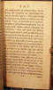 View image of 75of common sense, as to throw away, by refusing Mr. Hughson, an opportunity that may never offer again." Then, perceiving her daughter was about to answer her, she added, "Let us have no more romance, Rosalie, it will answer no purpose, but to irritate your father without changing his resolution. You will dress for dinner. To-morrow there is to be an assembly; it is already settled that we are to go; and, as it is the first time you have been seen there, I desire you will look as well as you can." "Gracious Heaven! (exclaimed Rosalie, as soon as her mother had left her), I am thus to be dressed up, and offered like an animal to sale; and my mother seems to think it a matter of course......Oh! Montalbert, how different are your manners from those of the people I am condemned to live among!—Dear and amiable patroness of my happy infancy, little did you imagine, when you were so tenderly kind to your unfortunate Rosalie, that you were laying up for her future
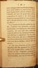 View image of 76years insupportable mortification!—Had I never been blessed in your society, had I never known those who are related to you, I should not now be perpetually making comparisons so much to the disadvantage of persons among whom it is my lot to live, and I should then have been as happy as my sisters." Very heavily for Rosalie passed the day. Mr. Hughson was sometimes extremely troublesome; but finding her still cold and repulsive, he now and then tried what could be affected by changing his battery, and affecting to neglect her for her sister, who, in her turn, put on a disdainful air, in evident resentment of the preference he had lately shown Rosalie, who so little desired it. It was not, however, in the eyes of Hughson that she appeared the fairest of the rural nymphs from 'under the hills.' Others of Mr. Blagham's acquaintance, who were of their dinner party, made the same discovery, and two of them attempt-
) View image of 77 View image of 77ed, during the afternoon, to engage her for the ball of the ensuing evening. She refused them both civilly, but positively. "Aye, (said one of them, in a whisper), I see how it is—Hughson is the happy man; is it not so, Miss Rose?" "If you mean, Sir, (answered she coldly), that Mr. Hughson's happiness is to arise from dancing with me to-morrow, I assure you, you are mistaken." "What, you are not engaged to him then?" "No, Sir; nor shall I engage myself to any body." "Hey!—(cried Hughson, rising and skipping across the room)—Hey!—what's all that?—who talks of engagements?—Hey!—why, I hope, Miss Rosalie, nobody has been pretending to take away my partner; surely you understand, Ma'am, that you are engaged to me?" "Indeed, Sir, I do not, (replied Rosalie), and I should be sorry you understood it."
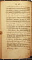 View image of 78"There!—(cried one of the young men who came from a provincial town in another country),—there! I have still a chance. Sir, (added he, addressing himself very solemnly to Hughson), I'll tell you what is a rule with us—that is with our ladies—and you know what excellent, genteel, fashionable meetings we have at——. Sir, it is a rule among the ladies of——never to engage themselves to a gentleman in a black coat, while they have a chance of being asked by any other, and damme if I don't think they're in the right." "You think, Sir, (said Hughson, colouring violently and trembling with passion); and pray, Sir—I say—Sir, that is—was there any question asked as to what you, Sir, think, Sir?" "I beg, (said Rosalie, who had no inclination to have a quarrel begin between these two coats of different colours on her account), I beg that the conversation may drop; I have no intention, Mr. Hughson, of dancing at all."
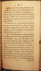 View image of 79"Oh! (cried the young man, his opponent), the whole room will rise, by G—, against such an inhuman resolution.....No, no, that will never be allowed.—Here, Blagham, before you sit down to cards, you dog you, come and set this matter to rights for us." "I beg leave to retire from the discussion then, Sir, (said Rosalie rising), though I cannot imagine how either you, or Mr. Blagham, can be interested in a matter so immaterial to you both." "Eh! (cried Blagham)—why, my Rose of beauty, you have all your thorns about you to-night. Aye! aye! Sir, thus it is—thus it is—thus do these imperious little divinities treat us till they are married...Why now, there's my Kitty as great a tyrant as that little lioness her sister; but you see she begins to look tame and demure already. Come, come, Miss Rose, frowns do not become the fair, child."—He was proceeding in the same style, when, her patience being entirely exhausted, she
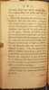 View image of 80snatched away her hand, which Blagham endeavoured to hold, and left the room. Before she retuned the card tables were adjusted, and Mr. and Mrs. Lessington, who dearly loved a game at whist, were settled with Blagham, who really had, and Hughson who fancied he had, great skill in the game. Rosalie, therefore, seeing her two persecutors employed, and her father and mother deeply engaged, took out her work and sat down behind Mrs. Lessington, as much out of sight as possible: but this peaceful state she was not long suffered to enjoy. The idle man who remained insisted on making a party for a round table, and with whatever reluctance Rosalie was compelled to join them, and to be listening for three mortal hours to the sad attempts at wit which a commerce table never fails to produce. At length, however, the evening ended; and for Rosalie the following arrived too soon.
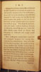 View image of 81Dragged to a scene, where she considered herself exposed as an animal in a market to the remarks and purchase of the best bidder, it was with extreme reluctance that Rosalie entered the ball-room; nor had she by any means taken that pains to add to the attractions of her person which her mother had insisted upon. The simplest and neatest muslin dress, without feathers, flowers, or ribbands, was all she put on; while her sister Maria came down as showy and blooming as ribbands and rouge could make her. Mrs. Lessington would have reproved her youngest daughter for having thus neglected her admonitions; but, when she saw the three together, she could not help being sensible that Rosalie looked like a girl of fashion, while Catharine and Maria had the appearance of people dressed for the performance of strolling plays, with all the finery the property man could furnish. Without any remonstrance, therefore, she was suffered to go with the rest; but not so easily did she escape from the renewed
) View image of 82 View image of 82importunities of Mr. Hughson to dance with him, who having engaged her father to interfere in his favour, she received so peremptory an order to accept him, accompanied by looks so angry and menacing, that she was compelled, though with extreme reluctance, to submit. Her sister on the point of being married was of course taken out by her lover, but by some mortifying fatality Miss Maria was unasked; and the first dance was nearly ended, when, to the extreme surprise of Rosalie, who with her skipping partner was arrived at the bottom, she saw (almost doubting the information of her eyes) her sister Maria standing up with Montalbert. The change of her countenance, when it was her turn to take hands with him, expressed more forcibly than words could have done her astonishment. Montalbert perceived it. "You rather wonder to see me here?" said he.—"Wonder! (cried she)—Good Heavens!—and your friend, how does he do?—He is certainly better since you could leave him." The
) View image of 83 View image of 83figure of the dance obliged them to separate; but in a few moments declining to do down the dance, which was soon after over, Montalbert seated himself by her, taking without any scruple the place of her partner, whom she sent away for some negus. "You inquire after my friend, (said Montalbert), with an interest so tender, that, however I may envy his happiness in exciting that interest, it becomes me to satisfy your inquiries: yet you might, perhaps, obtain more satisfactory information from himself." "From himself! (cried Rosalie eagerly); is he here then?" "Alas! (answered Montalbert, again deeply sighing), he seems insensible of the good fortune which I would purchase with worlds, if I possessed them, for there he is conversing with Lady——, and Lady Anne——, at the other end of the room. Shall I go and tell him, Madam, (added he coolly), that you desire to see him?"
) View image of 84 View image of 84"By no means, (replied Rosalie), by no means—not for the world!" "Insensible fellow! (cried Montalbert) whom rank can a moment detain from Miss Rosalie Lessington. Ah! if he saw with my eyes—if his heart felt as mine does!"—— "I am very glad, however, (said she, affecting not to understand this), I am extremely glad to find Mr. Charles Vyvian so much recovered; I was quite alarmed at his threatened illness on account of his mother." "On account of his mother!" repeated Montalbert. "Yes, Sir, (said Rosalie gravely), certainly on the account of his mother." At this moment two persons of very different description approached them....Hughson came smirking and prancing with a glass of negus, and began telling how he had mixed it after a manner peculiar to himself; but seeing that Rosalie gave no attention to him, and that Montalbert made
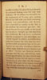 View image of 85 no offer to resign the place he had usurped, he remained looking even less wise than ordinary, till his dismay was increased by the appearance of Vyvian, who, putting him on one side with very little ceremony, entered into conversation with Rosalie, who expressed as warmly as she felt it the pleasure his recovery gave her. She loved Charles Vyvian exactly as she loved her brothers: brought up with him from her childhood, she had never considered him for a moment in any other light, nor did she suppose it possible, notwithstanding what her mother had said, that any other person could entertain an idea of his having for her any other attachment than that which might subsist between a brother and a sister. Vyvian was fourteen months younger than she was, and nothing could, in her apprehension, be more absurd than to suppose Vyvian, not yet eighteen, would see her in any other light than she thought of him. This gave to her manner towards him an ease which she was far from feeling when she conversed with Montalbert;
) View image of 86 View image of 86and now, without any hesitation, or indeed any apprehension of impropriety, she rose from her seat, and walked with him to the end of the room, Montalbert taking his place in silence on the other side, while the luckless Hughson drank up himself what he had fetched for his partner, and then went with a rueful countenance to find at the sideboard below something more powerful to dissipate the chagrin he felt, as well as the awkward sensations of conscious inferiority. Rosalie, in the mean time, not thinking about him, was inquiring of Charles Vyvian why he prolonged his stay in the country, when he was well enough to go? "I thought, (said she), I thought you told me, that Mrs. Vyvian did not even know of your intentions of being at Holmwood. If she should hear of your remaining there on account of illness, 'tis so far from advice, I cannot imagine why you stay." "What would you think, (replied he in a low whisper, as if he was solicitous that his cousin might not hear him)—what
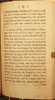 View image of 87would you think, Rosalie, if I were to tell you, that I went thither in the hope of seeing you; that I linger here for no other reason than because I cannot prevail upon myself to quit the country where you are?" "I should think, (said Rosalie hesitating), and I should say, that I was very sorry Mr. Charles Vyvian should talk so wildly and improperly——————." She was proceeding, though she hesitated, blushed, and was evidently disconcerted, when she was interrupted by her mother, who, coming towards her, said, with more appearance of anger than she had ever yet shown, "Why is it, Rose, that you thus quit Mr. Hughson!—I am astonished at your rudeness, child, and must insist upon having no more of such behaviour."—Mrs. Lessington then seized her hand, and giving it into that of Hughson, said, with a sort of convulsive laugh, "Here, Sir—I am sure Rose will be happy—he! he! he!—to go down the dance with you—
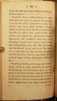 View image of 88I am sure she does not wish to be left out of this dance." Hughson then, endeavouring to smile and smirk in order to conceal the extreme vexation he felt, advanced to take her hand; but, from some unusual courage which at that moment she felt, some sudden impulse for which she could hardly account, and which she afterwards thought blameable, she snatched away the hand Hughson would have taken, and telling him disdainfully that she did not know that she should dance any more, she turned to the seat she had before occupied, whither Vyvian, wholly regardless of the evident anger of Mrs. Lessington, followed her. Hughson, swelling with rage and resentment, which he had, however, no means of satisfying, now seemed to give up the point in absolute despair; but, accustomed as he had been to fancy that so clever a little fellow, with his fortune and expectations, might have his choice among the
) View image of 89 View image of 89young women of the whole county, he could not repress the mortification he felt. The plan that Montalbert had adopted of dancing with Maria Lessington, in order to obtain the opportunity of conversing with her sister, had been so far from answering, that it had entirely baffled his purpose......He now saw himself engaged for the evening, and prevented from enjoying a moment's conversation with Rosalie, while his more fortunate cousin was happy enough wholly to engross her attention. Montalbert, however, who had seen too much of the world to be easily diverted from his design, made a false step as he was going down the dance that was now begun, and protesting he had hurt himself so as to make his going on impossible, was limping to a seat; but seizing on poor Hughson in his way, he cried, "My good Sir, I perceive your fair partner declines dancing any more; I am, most unfortunately for myself, disabled—It will be happy for
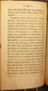 View image of 90you, for you will have the pleasure of taking one lovely sister instead of the other." Hughson, clever fellow as he thought himself, was so over awed by the easy manners and conscious superiority of Montalbert, that he had nothing to say, but advancing towards Miss Maria, as if this was an arrangement to which he was under the necessity of submitting, they sullenly finished the dance together; while Montalbert, availing himself of the success of his stratagem, seated himself on the other side of Rosalie, who, however unwilling to disoblige her mother, forgot in a few moments that she was likely to do so, while she attended sometimes to Vyvian as to a brother whom she loved, or as to a very young man whose wild sallies were pardonable; but to Montalbert she listened with sensations very different: she knew far less how to repress the oblique declarations he made to her—declarations which she trembled to listen
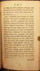 View image of 91to, while she felt conscious, though not daring to own it to herself, that all the future happiness of her days depended on their sincerity. Mrs. Lessington had retired to cards after her last sharp remonstrance to her daughter, and the eagerness with which she always pursued her game, kept her in another room for some time. At length, however, she was either put out of the game by rotation, or some evil-disposed persons had whispered to her what was passing among the dancers; for about an hour and an half after her last rebuke she returned to the ball-room, and, in a voice and manner more angry than before, told Rosalie that she was going home, and should take her thither at the same time. "As to your sisters, (added she, laying great emphasis on her words), as they know better how to behave, I need not interrupt their amusement——they shall stay as long as they please."
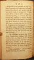 View image of 92Rejoiced to be released on any terms from a repetition of reproaches in a public room, she assured her mother that she was quite ready to attend her. "Very well, Miss, (replied Mrs. Lessington)—it is mighty well.......Come, Sir, (continued she, turning to Charles Vyvian), as we are old acquaintance, you know, you shall favour me with your arm——but stop——I must beg that you will first be so good as to accompany me to the top of the room, I must speak to Catharine and Maria."—Without waiting for an answer from Vyvian, she took his arm, and led him away. "My blessings on your dear Mama! (said Montalbert, smiling half maliciously)—how kind she is to me—but the moments are precious—tell me, I do beseech you, Rosalie, is it impossible for me to see you again before I leave this country—before I leave England—for years!" "How is it possible?" answered Rosalie, hardly knowing what she said.
) View image of 93 View image of 93"It would be possible, (replied he), if you would only try to oblige me." "O no! no! (cried she with quickness), pray do not think of it; it would be utterly improper if it were not impossible." "Do you rise early? (said Montalbert, disregarding this faint repulse)—Do you never walk before breakfast?" "Why will you ask?" answered Rosalie. "Because, as I shall certainly quit Holmwood House after to-morrow—as I cannot again importune you—as I shall probably—ah! too probably—never see you again, let me entreat you only to see me for one half hour before I go?" "I cannot indeed, Sir! (answered she). To what end would you ask, what I am sure you would think it very wrong were I to grant?" "But if I am in the neighbourhood of your house, early on the morning after
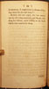 View image of 94to-morrow, I might have a chance of saying adieu for the last time?" Rosalie did not reply, for her mother was by this time returned, and sharply bidding her follow, went hastily to the hired chaise that waited for them.
|
){kind=link}
){kind=link}
){kind=link}
){kind=link}
){kind=link}
){kind=link}
){kind=link}
){kind=link}
){kind=link}
){kind=link}
){kind=link}
){kind=link}
){kind=link}
){kind=link}